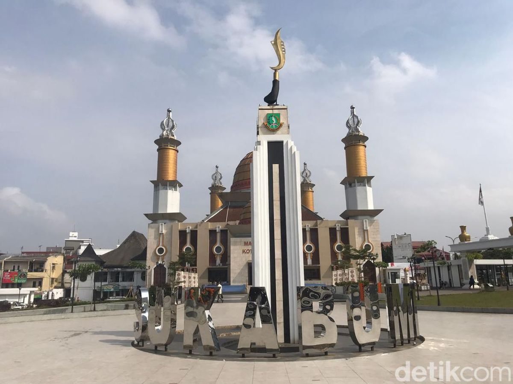
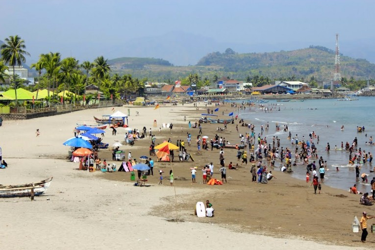
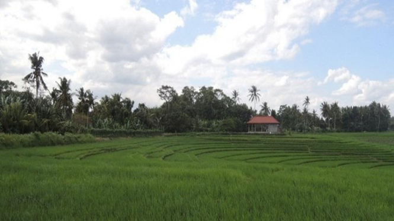

Geografis

Sukabumi berada di bagian barat daya Jawa Barat, berbatasan langsung dengan Samudra Hindia di selatan. Wilayahnya terbagi menjadi Kota Sukabumi dan Kabupaten Sukabumi, dengan luas yang jauh lebih besar untuk kabupaten. Lokasi geografisnya yang strategis membuat Sukabumi menjadi salah satu destinasi wisata alam di Jawa Barat.
Wisata
Sukabumi terkenal dengan pesona alamnya yang memukau. Beberapa tempat wisata alam populer di daerah ini meliputi:
Pantai Pelabuhan Ratu

Pantai ini terkenal dengan legenda Nyi Roro Kidul dan menjadi tempat wisata favorit
Geopark Ciletuh:
Kawasan yang diakui UNESCO ini menawarkan keindahan geologis, air terjun, dan panorama laut.
Kehidupan

Penduduk Sukabumi mayoritas adalah suku Sunda dengan bahasa Sunda sebagai bahasa sehari-hari. Tradisi Sunda masih sangat dijaga, seperti kesenian jaipong, wayang golek, dan upacara adat. Makanan khas Sukabumi juga terkenal, seperti moci, bandros, dan tauge goreng. Sukabumi memiliki sektor ekonomi yang didukung oleh pertanian, perkebunan, dan pariwisata. Daerah ini menghasilkan produk-produk pertanian seperti padi, teh, dan kopi. Selain itu, pariwisata juga menjadi sumber pendapatan penting bagi masyarakat setempat. Sukabumi dapat diakses melalui jalur darat dari Bogor atau Bandung. Perkembangan infrastruktur, seperti tol Bogor-Ciawi-Sukabumi (Bocimi), memudahkan akses ke wilayah ini. Namun, transportasi dalam kota masih didominasi oleh angkutan umum tradisional. Sukabumi memiliki iklim tropis dengan suhu yang relatif sejuk, terutama di daerah pegunungan. Ini menjadikan Sukabumi tempat yang nyaman untuk tinggal atau sekadar menghabiskan waktu liburan.